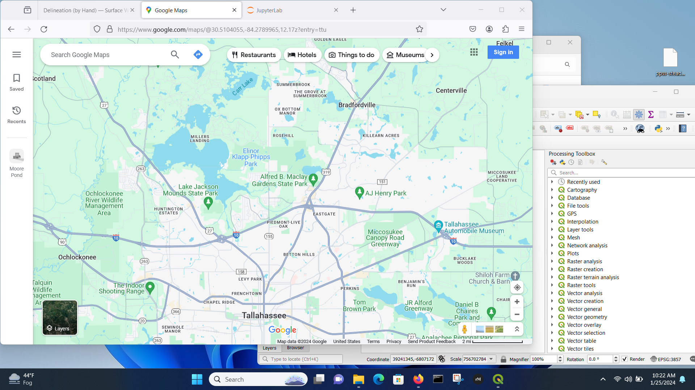
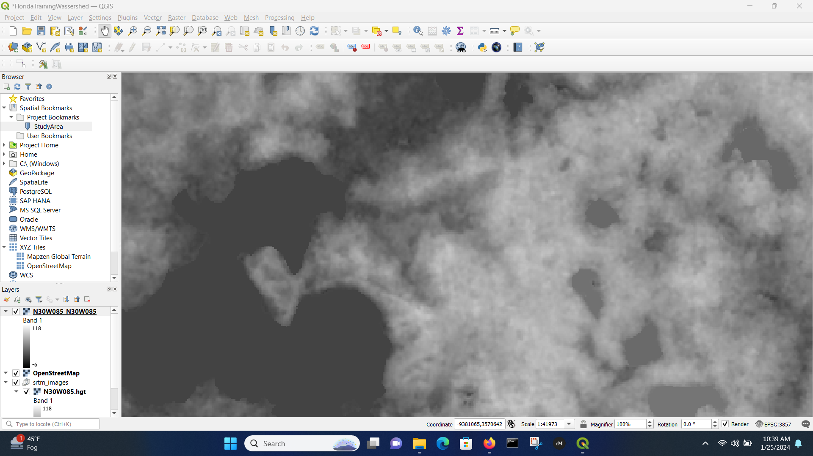

5. Watersheds¶
Course Website
Readings¶
Baraka, M. 2024, Watershed Delineation in QGIS: A Summary Guide
Brutsaert, W., 2005, Hydrology: An Introduction. Cambridge University Press
Chow, V.T., Maidment, D.R., Mays, L.W., 1988, Applied Hydrology. New York, McGraw-Hill.
Florida Delineation Training Watershed (png) Right-Click “Save As…”
Texas Delineation Training Watershed (png) Right-Click “Save As…”
Videos¶
Outline¶
What are watersheds?
Delineation Concepts
By-hand (obsolete practice)
Using GIS tools (current practice)
Watershed metrics
Area
Slope
Main Channel metrics
Land use and vegetative cover types
What are Watersheds?¶
A watershed is the area of land that drains all the streams and rainfall to a common outlet such as the outflow of a reservoir, mouth of a bay, or any point along a stream channel (this outlet is called a pour-point in GIS-speak). The term “watershed” is often used interchangeably with “drainage basin,” which may make the concept easier to visualize.
Note
A common outlet implies that the various discharges have concentrated into a a definable conduit (as opposed to sheet or overland distributed flow). The distributed flows are part of the watershed, but at times make engineering analysis at smaller scales challenging as no single control point exists.
A watershed can encompass a small area of land that drains into a trickling creek. It can encompass multiple states in the Midwest, all draining into the Mississippi River. Or it can encompass multiple countries draining into the Atlantic Ocean. No matter where you are standing or sitting right now, you are in a watershed.
Water is constantly in motion, be it via ocean currents, precipitation, or slowly moving through underground aquifers. Any given watershed is part of the larger whole of our global water supply.
Smaller watersheds can make up larger watersheds. The Mississippi River has many tributaries (each of which has its own watershed), and in turn empties into the Gulf of Mexico, which connects to the Atlantic Ocean. The U.S. Geological Survey delineates our nation’s watersheds as “Hydrologic Units,” which are assigned hydrologic unit codes. These can range in scale from expansive water resource regions covering millions of square miles down to tiny local tributary systems. There are 90,000 hydrologic unit codes designated nationwide.
Some more compact definitions of a watershed include:
Topographic area that collects and discharges surface streamflow through one outlet or mouth (pour point)
The area on the surface of the Earth that drains to a specific location
In groundwater a similar concept is called a groundwater basin – only the boundaries can move depending on relative rates of recharge and discharge
The topographic definition omits that there could be subsurface sewer systems that can cross topographic boundaries.
It’s a big deal in urban areas.
Consider the artist rendering of a watershed

Large watersheds are comprised of smaller interconnected watersheds, thus in the rendering watershed B is a part of watershed A.
Delineation Concepts¶
Watershed delineation is a fundamental process in hydrology and environmental science that involves defining the boundaries of a drainage area or catchment. It identifies the geographic area from which all precipitation and surface runoff flow into a single outlet, typically a river, stream, or lake.
This analytical method is typically employed:
By-hand and/or semi-automated using digital maps (obsolete, but viable for small areas)
Fully-automated using digital elevation data and geographic information systems (GIS) (current practice)
In all the cases above the goal is to trace the flow of water and determine the contributing area to a specific point of interest.
Watershed delineation plays a crucial role in various applications, including flood management, water resource planning, and environmental conservation, by providing a spatial framework to understand and manage water-related processes within a defined geographic region.
Delineation (by Hand)¶
Readings¶
Step 2. Superimpose a Grid¶
While not strictly necessary its helpful. The grid serves two purposes, first a reference system and as a raster representation of the watershed (albeit at a coarse resolution)

Step 3. Cell Elevations¶
Use the grid to estimate average elevations in a grid cell, you use this information to help locate the boundary. Water flows from high to low elevation. Starting from the outlet work uphill until have high point, if its downhill as you cntinue in one direction beyond the point, its possibly the boundary (you are identifying “ridgeline” features).
Simultaneously identify internal water flow paths, these help identify the ridgeline features.

Step 3. Draw/Refine Boundary Estimates¶
Using the grid to estimate average elevations in a grid cell, you locate the coarse resolution boundary. Water flows from high to low elevation. Using the internal water flow paths, move upgradient along these paths to refine the boundary delineation.

Delineation (by GIS)¶
Florida Watershed¶
Here we do step-by-step example of the previous watershed(s). The steps are those outlined in Baraka, M. 2024, Watershed Delineation in QGIS: A Summary Guide
The SAGANG package was manually installed using guidance from How to manual install SAGA 9.1 (YouTube) . Other plug-ins are installed using the Plug-in manager menu.
First start with the Florida Topographic Map

Then we need to locate the area - it turns out that the Moore Pond feature is near Tallahassee Fl. (Used Google to find that out!)

Then zoom out

The bridge we are interested is on the Miller’s Landing feature - with that in mind, we can start QGIS, load OSM tiles, and look for the study area.

We will shift the window to the right a bit and scale about the same as the original Topographic map clip. Once we have desired area, then save a bookmark to easily return to the view area.
Get DEM¶
Now we will get a DEM coverage - we will use the SRTM from NASA (30 meter poixels) but one might need better resolution as project proceedes.
Using the Canvass area, download SRTM tile:

Next we can play with transparency so can background the street maps.

Contours (Optional, but useful)¶
We can make a elevation contour of the study area.
Menu/Raster/Extraction/Contour
The result (using 3.048 meter intervals \(\approx\) 10 feet) is :

It is probably more useful for fewer lines, so will repeat at 10 meter (32.8 foot) intervals - these will appear in later pictures.
Extract (Clip) DEM - Warp to a UTM Coordinate System¶
Here we will clip the viewing area, and then just process the clipped area - this will speed up our work a lot.
Menu/Raster/Extraction/Clip Raster by Extent
Here is the clipped area (zoomed out to verify)

Warp (reproject) the Clipped Area to UTM Zone¶
UTM gives a nearly cartesian system, which is useful for other analyses, so lets do that now.
First need to know the UTM panel. Use Google

Now we know the zone, so use
Menu/Raster/Projections/Warp (Reproject)
Mostly used defaults, except chose Zone 16N (it was only CRS available in the software), and used cubic interpolation to smooth out the elevations a bit - we are after a watershed boundary, so the smoothing should help with goofy curvature.

Sink Fill¶
This step is to fill in low spots, so there is always a path to lowest point (I sort of disagree with this step, but it is accepted GIS analysis step). Here some trial-and-error is needed using the System for Automated Geoscientific Analyses (SAGA) tools. The current SAGA version is 9.X while the only version I can access is 7.3 and there is no guidance on how to upgrade. Based on internet search, most QGIS non-genius users are coimplaining that the SAGA project is failing to support the upgrades, and other techniques are offered. If you are in Linux, you build from source anyway, so its not a problem.
I found that SAGA NextGen/Terrain Analysis/Hydrology/Sink Fill (Wang & Liu) indeed ran and produced non-empty output.

Channel Identification¶
If needed (sometimes can skip to next step):
SAGA terrain analysis package (to extract straler order)
Visualize Straler Order
Filter small streams using raster calculator
Adjust Strahler order
Channels and Drainage Basins¶
SAGA/TerrainAnalysis-Channels/Channel Network and Drainage BasinsInput Filled DEM and choose threshold based on Straler order (I did trial and error without saving files until I had a workable looking catchment then proceede to next step/
Adjust symbology as necessary to interpret the results (repeat as needed unless it fails then no point)
Determine Catchment¶
Use coordinate capture plug-in to find coordinates of pour point.
Use Upslope Area in SAGA with the coordinates.
Polygonize the Watershed¶
Raster/Polygonize(Raster to Vector)
Choose delineated raster as the input. Specify the output vector as shapefile (SHP)
Completed Delineation¶
Here we render the delineation - the vector polygon, which has use later on (and is the whole point of synthetic hydrograph generation).

Compare to Manual Delineation

Watershed Metrics (General Concepts)¶
Now that the watershed is identified and demarked we can measure a few commonly used and important physical properties. These measurements are used are to characterize the fundamental unit in surface water hydrology which is the watershed.
A watershed is defined as the area on the surface of the earth that drains to a specific location.
A minimal description of watershed properties must include:
Area
Main channel length
Slope (requires the specification of path), The MCS is usually reported as is the average slope (highest point on the boundary to the pour point). The transverse slope is often reported too.
Soil permeability
%-impervious (developed)
Measuring Area¶
If the grid cells used in delineation are all squares, one can count the squares contained in the watershed, multiply by the per-cell area and have a good estimate of the watershed area.
# count squares from by-hand
howmany = 270
# size
howbig = howmany*525*525/43560
print(howbig)
1708.4194214876034
Or one can represent the outline as a polygon, and obtain the coordinates of each vertex and use numerical integration (like you learned in surveying) to estimate the plane area.
Or use GIS tools directly:
Export using
Raster/Extraction/Clip by Mask Layerand results in a final product for later use. Here is the clip command (note the file type is .xyz to produce an ASCII grid)
Here is the result after prettification.
Now determine area. If we have the vector outline then use the attribute table and compute the polygon area of the only polygon.


{kind=link}
{kind=link}
# compute area in acres
7540147.046*(3.28)*(3.28)*(1/43560)
1862.2570702407345
Measuring Length(s)¶
Similar to area, you can count cells along a path and multiply the count by the length of a cell side, or the cell diagonal (depends on how many diagonal moves you need to make) to obtain a length. Or use software (Acrobat Pro, AutoCAD, Engauge, ArcGIS, QGIS, …. ) to make the measurements.
Estimating Slope(s)¶
Slope estimates require two components
A path with a length (\(S\))
The change in elevation along the path (\(\Delta z\))
The dimensionless slope is simply the ratio of the two \(\frac{\Delta z}{S}\). Percent slope is the dimensionless slope multiplied by 100. Sometimes slope is expressed in units of \(\frac{ft}{mi}\) or \(\frac{m}{km}\), while meaningful these will have to be converted into dimensionless or %-slope for most hydrologic computations.
Estimating Soil Properties¶
Subjective when using paper maps, but reasonable values can be inferred from soil maps - either paper-based or electronic Web Soil Survey

Note
There is a GIS plug-in that can directly access the USDA database.
Estimating %-Impervious¶
This is subjective, but one reasonable approach is using Google Earth
Find the area of interest
Select a viewing height (needs to be same for all areas if you are going to have to scroll)
Put a grid on the screen (physical grid on see‐thru plastic, or use a china marker and draw on the screen)
Count concrete vs not concrete – relative ratio is a useable estimate of the % impervious
Note
This would be a good task to hand off to a machine learner model. Take the area of interest, capture an image, have the ML model count pixels that are NOT CONCRETE (brown, green, …..).
Land use coverages are available in GIS that could be used.
USGS StreamStats¶
In many states one could also use an on-line tool called StreamStats
For example a culvert on Snake Creek in Oklahoma can be examined and will produce the delineation below

Once the watershed is defined, download the shapefile(s) into your GIS and proceede with your remaining hydrological tasks.